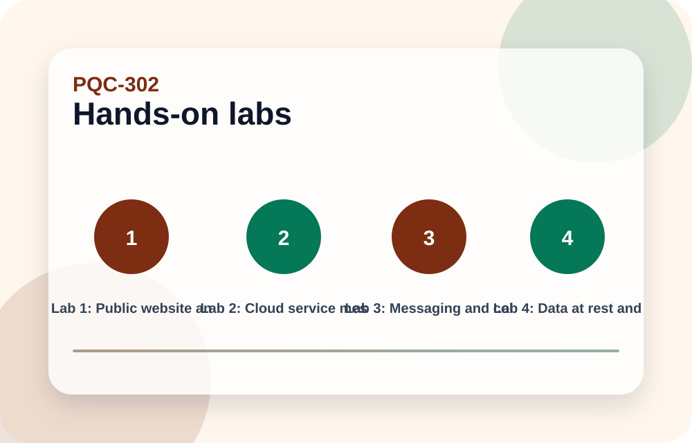

Concrete example
A mobile banking app using certificate pinning may break if certificates or chains change without an app update.
Scenario-driven labs that make the learner apply PQC concepts to realistic systems instead of memorizing terms.
Educational reference only. Production cryptography decisions need current standards checks, vendor validation, security review, interoperability testing, and rollback planning.

A public website and API platform usually depends on TLS, certificates, load balancers, CDN, WAF, mobile clients, browser clients, monitoring, and certificate automation. PQC work starts with endpoint inventory and client-path testing.
The first practical change may be hybrid key exchange testing. Certificate signatures may follow later depending on ecosystem support. The application business logic may not need to know PQC exists, but deployment infrastructure certainly does.
A good lab answer includes inventory, pilot endpoint, client matrix, performance measurement, middlebox testing, rollback, and monitoring.
A mobile banking app using certificate pinning may break if certificates or chains change without an app update.
Do not only test from the office network. Test mobile carriers, corporate proxies, VPN users, old devices, and international paths.
Web PQC readiness is infrastructure plus client compatibility.
Cloud-native systems often use service identities, mTLS, sidecars, control planes, KMS, secrets managers, CI/CD signing, and API gateways. PQC changes may be hidden in platform components rather than application code.
The lab question is which team owns each layer. The application team may own code, platform engineering may own service mesh, security may own certificate policy, and cloud operations may own KMS.
The output should be a dependency map and a pilot plan that does not assume one team's upgrade solves the whole platform.
A service mesh may support hybrid mTLS only after control plane, sidecars, and policy configuration all support the same mode.
Do not leave platform crypto out of the application risk register.
Cloud PQC is often platform engineering work.
Messaging systems can use transport encryption, end-to-end encryption, identity keys, prekeys, signed device lists, server storage encryption, and notification channels. Each has different PQC implications.
A practical plan separates transport security from end-to-end security. Upgrading server TLS does not automatically protect stored old messages or end-to-end identity mechanisms.
Client updateability is central. If old clients cannot understand new key material, the migration may need staged compatibility.
A chat product might pilot PQC in new sessions while keeping old message history protected by existing data-at-rest controls until rekey or archival policies are defined.
Do not promise all old messages become PQC-protected without rekeying or re-encryption logic.
Messaging requires layer-by-layer migration language.
PQC does not usually replace symmetric encryption for data at rest. The public-key concern appears where data-encryption keys are wrapped, exchanged, escrowed, signed, or protected by certificates.
Backups and archives matter because they often have long confidentiality lifetimes. A migration plan should ask how encryption keys are generated, wrapped, stored, rotated, recovered, and destroyed.
A real lab answer does not say 'switch the database to PQC.' It identifies key wrapping, KMS/HSM support, recovery workflows, and re-encryption or re-wrapping plans where needed.
A backup encrypted with AES may still depend on an RSA-wrapped data-encryption key. The AES is not the main issue; the key wrapping and recovery model are.
Do not re-encrypt petabytes without first understanding which public-key dependency creates risk.
For data at rest, inspect key management and wrapping first.
Firmware signing is one of the clearest long-lifecycle PQC use cases. Devices may stay deployed for many years, and a verifier embedded in a bootloader may be hard to update.
The lab plan starts with model inventory: which devices exist, which bootloaders and verifiers they use, which signature algorithms they accept, whether they can receive verifier updates, and how rollback is prevented.
The migration may require a preparatory update that adds crypto agility before the final PQC signing policy is enforced.
A router fleet may need a bootloader update that accepts both the current signature and a future PQC signature before the vendor can switch signing policy.
Do not assume devices can parse larger signatures or metadata without memory and parser testing.
Device migration often starts with verifier agility.
These are practical exercises. Read the challenge, decide your answer, then reveal the recommended answer and compare.
Challenge: You own a public API, service mesh, and firmware fleet. Which should be first?
Recommended answer: Pilot where you can measure safely, but prioritize long-life secrets and trust roots. Often internal API hybrid testing plus firmware agility assessment run in parallel.
Challenge: A product manager asks why app UI work is needed for PQC.
Recommended answer: Usually app UI is not the point; client compatibility, update channels, certificate pinning, and support messaging may matter.
Challenge: An archive uses AES for data and RSA for key wrapping. What changes?
Recommended answer: Review and migrate key wrapping/recovery, not AES itself unless key sizes or modes are weak.
Pick an answer. The page will mark the correct answer and keep score.
Use these as the standards trail before production decisions.
NIST CSRC Post-Quantum Cryptography ProjectNIST FIPS 203: ML-KEMNIST FIPS 204: ML-DSANIST FIPS 205: SLH-DSANIST HQC selection announcementNCCoE Migration to Post-Quantum CryptographyNSA CNSA 2.0 guidanceThis module is intentionally lesson-based, not a glossary. Read the explanation, inspect the diagram, review the example and pitfall, then use the use-case labs to apply the concept.
Use the side navigation to jump, the Top button on mobile, and the knowledge check to test retention.
This is educational material, not production cryptographic approval.